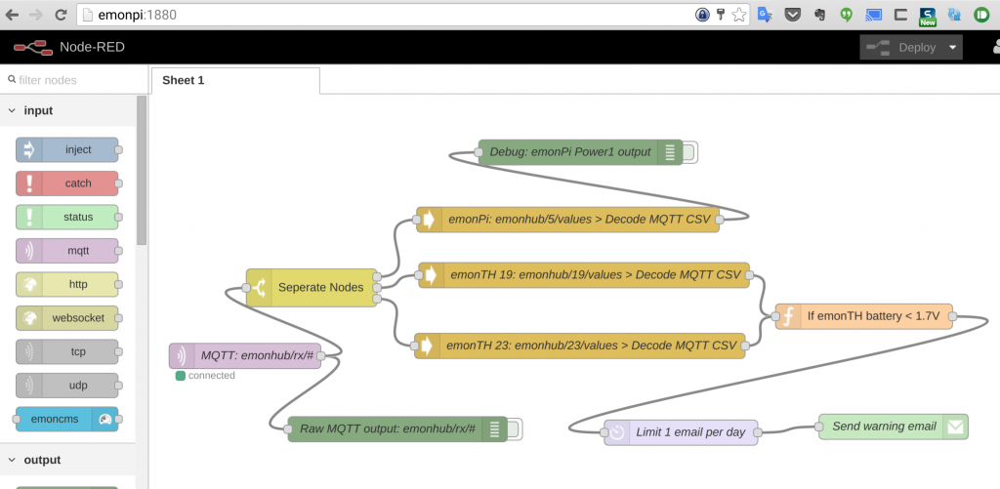

UPDATE (27/01/16): PLEASE DON'T INSTALL THIS BETA: There is a new SD cad image in development that will be released in a couple of weeks.
IMPORTANT: If you are currently running this beta you willl get 'Can't connect to database' error after an update. You will need to update your local MYSQL Emoncms database username and password. This is due to a change in the default MYSQL username and password in default settings.php to improve security:
Login to MYSQL with root user (default password raspberry):
rpi-rw
mysql -u root -p
Create new user:
CREATE USER 'emoncms'@'localhost' IDENTIFIED BY 'emonpiemoncmsmysql2016'; GRANT ALL ON emoncms.* TO 'emoncms'@'localhost'; flush privileges; exit;
rp-ro
-------------------------------------------------------------------------------
DOWNLOAD BETA: emonSD-22Dec2015.img.zip (768Mb)
USA Mirror: emonSD-22Dec2015.img.zip
MD5 Checksum: 32f2b3fd4551cbca8e63e78b0304da5f
Here is the latest version of our emonPi / emonBase (RaspberryPi + RFM69Pi) pre-built SD card image.
This post follows on from Steps towards an EmonCMS 9.0 SD Card Image + Upgrade path, the Low-write mode - your thoughts please thread and blog posts on node-RED & MQTT, openHAB and LightWaveRF OOK control.
Key Features:
- Based on minibian lightweight Jessie (12-11-15)
- 4GB min card size download (shipping on 8GB expanded SD card)
- Emoncms V9 (RasPi emonPi install - thanks Paul Reed for writing the guide)
- Read-only root FS (see discussion thread)
- NodeRED, LightWave RF MQTT OOK control and openHAB all pre installed and configured
Please report any bugs on this thread.
Data Migration
If you're moving from our previous pre-built-SD card, and have Emoncms data you want to migrate, this can be done using the migration and import script:
If you're moving from the old image, on your old Pi, you will need to:
- SSH into existing emonpi/emonbase
- Enable write mode: rpi-rw
- git clone https://github.com/emoncms/usefulscripts.git
- sh usefulscripts/emonpi-migrate/emonpi-export.sh
On the new emonpi:
Copy the resultant backup.tar.gz which will be created in /home/pi/data to your computer.
Prepare the new SD card with the new image. Either copy the backup.tar.gz onto the data partition manually with an sd card reader, prior to powering up the pi, or copy it over using ssh.
Then:
- SSH into emonpi/emonbase with new image
- Enable write mode: rpi-rw
- sh usefulscripts/emonpi-migrate/emonpi-import.sh
We have now built in the backup export script into Emoncms running on the new image, this will make migrating much easier in the future. For more into, and to post issues regarding the migration script,
see this forum discussion thread.
{kind=link}
Storage & Read-only File system
The image is based on Minibian (Lightweight Raspbian Jessie) which makes for a very space efficient stack. With everything installed (inc nodeRED & openHAB) total system size is 1.5GB compared to the previous ready-to-go emonPi image, which was over 2GB without nodeRED or openHAB.
As before, the filesystem is in read-only mode by default. discussion thread.
To put the filesystem in read/write mode, use the command: rpi-rw
To return to read-only mode, use the command: rpi-ro
pi@emonpi:/boot$ df -h Filesystem Size Used Avail Use% Mounted on /dev/root 3.1G 1.5G 1.5G 52% / devtmpfs 483M 0 483M 0% /dev tmpfs 487M 0 487M 0% /dev/shm tmpfs 487M 31M 456M 7% /run tmpfs 5.0M 0 5.0M 0% /run/lock tmpfs 487M 0 487M 0% /sys/fs/cgroup tmpfs 20M 6.5M 14M 33% /var/lib/openhab tmpfs 1.0M 8.0K 1016K 1% /var/lib/dhcp tmpfs 30M 18M 13M 59% /var/log tmpfs 30M 40K 30M 1% /tmp /dev/mmcblk0p1 61M 20M 42M 32% /boot /dev/mmcblk0p3 484M 32M 427M 7% /home/pi/data
The main data folder for emoncms is /home/pi/data this folder is always mounted Read/Write. A number of other folders are mounted in RAM (tmpfs), see /etc/fstab. A read-only file system presents challenges to some core Linux processes such as DHCP and NTP. A couple of DHCP & Resolv files are located in the writeable ~/data folder and symlinked to /etc and a custom /sbin/dhclient-script is used.NTP-backup (thanks Paul) is used to enable NTP clock updates in R/O mode. See the original NTP discussion thread.
emonPi
Now updates itself on first factory boot so we will always ship with latest software pulled from github. emonPi LCD now shows when it's updating and also LCD scrip has been updated to include authenticated MQTT support and to display temperature, VRMS and pulse count values as well as power 1 &2.

Emoncms V9
Access via: http://emonpi
Authenticate: Create the admin user account
Configure: emonhub.conf (located in ~/data) via web interface
Update: Pull in the latest updates from Emoncms stable branch using the web-based update tool in Administration > update emonPi.
{kind=link}
SSH
The default SSH password has been changed from "raspberry" to "emonpi2016" since even though we recommend users change their password, not many do. Moving away from the default raspberry will give a little more security. It's still HIGHLY RECOMMENDED to change the SSH password using passwd (be sure the filesystem is in R/W mode before you change the password (rpi-rw)
MQTT
As before, the Mosquitto MQTT server is running on port 1883. emonHub posts emonPi data to emonhub/rx/<nodeID>/values topic. Mosquitto has been updated to the latest verion supporting web-sockets installed via mosquitto PPA: http://repo.mosquitto.org/debian/mosquitto-jessie.list
Port 1883 is open by default and authentication has been turned on:
mosquitto username "emonpi"
mosquitto password "emonpimqtt2016"
change in :
sudo nano /etc/mosquitto/mosquitto.conf
add lines
allow_anonymous false password_file /etc/mosquitto/passwd
To generate a password file, use the mosquitto_passwd tool. It will prompt for a password, then create a hashed password file.
$ sudo mosquitto_passwd -c /etc/mosquitto/passwd usernameNote if mosquitto authentication credentials are change the new credentials will also need to be updated in: ~/data/emonhub.conf /var/www/emoncms/settings.php ~/emonpi/lcd/emonPiLCD.py ~/oem_openhab/configuration/openhab.cfg in node-RED MQTT node via web flows editor
NodeRED
Node-RED is installed and set up with a basic (but useful!) demo flow to subscribe to emonHub MQTT topic and send an email to alert the user when emonTH batteries are low. For email to work, you will have to enter your gmail or smtp details into the node-RED email node. See node-RED blog post. For our install and setup notes see oem_node-red repo
Access Via: http://emonpi:1880
Authentication: user "pi" and password "emonpi2016"
The User folder is in the R/W partition so flows can be saved via web editor without he need to change to R/W mode /home/pi/data/node-red
Set user name and password in /home/pi/node-red/settings.js. Password is hash string generated using :
$ node -e "console.log(require('bcryptjs').hashSync(process.argv[1], 8));" your-password

Note: Node-RED as setup in the image is compiled for Pi2, to use with Model B+ Node will need to be recompiled. Follow these instructions:
Check if node & npm are installed/working properly, normally you will get these results:
pi@emonpi:~$ node -v Segmentation fault pi@emonpi:~$ npm -v Segmentation fault
Install ARM v6 (for a RasPi model B 512MB) LTS version of node.js
wget https://nodejs.org/dist/v4.2.4/node-v4.2.4-linux-armv6l.tar.gz tar -xvf node-v4.2.4-linux-armv6l.tar.gz cd node-v4.2.4-linux-armv6l/ sudo cp -R * /usr/
Check if Node-Red is working (can take up to 40-50s on a RasPi model B 512MB)
sudo service nodered start
Re-enable the Node-Red service (maybe not nescessary, haven't tested it)
sudo systemctl daemon-reload sudo systemctl enable nodered.service
Check if Node-Red gets auto-started on boot:
sudo reboot
OpenHAB
OpenHAB is installed and setup with the basic skeleton OpenEnegyMonitor config. See openHAB blog post.
Access via: http://emonpi:8080
Authenticate: user "pi" and password "emonpi2016"
Change user name and password in /etc/openhab/configurations/users.cfg
Configure: oem.items and oem.sites and located in git repo ~/oem-opemhab and symlinked to default.items and default.sitemap in relevant folders in to /etc/openhab/configurations.
Note: Config files are symlinked to our oem_openhab git repo so we can add functionally with git updates, pulled in automatically with emonPi update. It's recommended to setup your own sitemap and files config so your changes will not be overwritten by out updates:
e.g. dave.items and dave.sitemaps then navigate to http://emonpi8081/openhab.app?sitemap=dave

LightWaveRF OOK RF Tx
Service to control lightwaveRF plugs and relays via OOK (OOK Tx module installed on emonPi) controlled via MQTT and openHAB. See LightWaveRF OOK blog post.

Timezone
The raspi-config utility is not included in the Minibam image. The command $ tzselect or $ dpkg-reconfigure tzdata can be used to set the timezone. Then resulting timezone "TZ=xxx" can be appended to .profile file using $ nano .profile to make the change persistent at boot.
To Do:
Align to 128K SD card blocks http://openenergymonitor.org/emon/node/11695#comment-37411
Check logrotate is working properly
Re: (BETA): emonSD22Dec15 - emonPi / emonBase (Raspberry Pi + RFM69Pi) Emoncms v9 pre-built ready
Glyn,
I'm assuming that if folks want to run this on a pi B and need Node-Red then they can use npm uninstall and then do the install again?
Simon
Re: (BETA): emonSD22Dec15 - emonPi / emonBase (Raspberry Pi + RFM69Pi) Emoncms v9 pre-built ready
Also you need to add in that the wpa_supplicant file needs to be edited to include the SSID and password of the person installing this.
Which gets a bit hairy because the wlan0 error messages get blasted into the editor if you are in the editor at the time.
Simon
PS You might also want to remove your SSID and password otherwise we'll all be parking outside to use the free wifi.
Re: (BETA): emonSD22Dec15 - emonPi / emonBase (Raspberry Pi + RFM69Pi) Emoncms v9 pre-built ready
Yes, because of the way node-RED is compiled for the processor architecture I don't think it will be possible to have a single pre-built image to support both Pi2 and B+/B. Yes an uninstall then re-install of node-RED will be required for model B+ owners. I will post a guide.
Wifi password can be entered using the Wifi web-config in local emoncms when connected via Ethernet: http://openenergymonitor.org/emon/modules/emonpi#firstboot.
Good spot regarding my Wifi password, I'll make sure to remove that :-)
Re: (BETA): emonSD22Dec15 - emonPi / emonBase (Raspberry Pi + RFM69Pi) Emoncms v9 pre-built ready
Hi Glyn.
I'll test the node-Red thing, just getting things going again on a Pi B+.
On the wifi point, the issue is that if you haven't got the Pi plugged into a wired connection you can't get the connection as Jessie light doesn't have a browser (as far as I can tell). So to get to the local emoncms server you need wifi up and running. (and the link you give above is to the public emoncms not the local one).
So it would be good to have the info on how to change the wpa_supplicant file in this case. All I had to enter was the SSID and password. You maybe need examples for both types of authentification though.
Simon
Re: (BETA): emonSD22Dec15 - emonPi / emonBase (Raspberry Pi + RFM69Pi) Emoncms v9 pre-built ready
Agree, it would be nice if the emonPi broadcast it's own wifi access point initially for setup (see forum thread). However at present we are assuming a user would plug the unit into an Ethernet socket initially then scan and connect to a local wifi network in emoncms. The link I sent above is referring to local Emoncms
Re: (BETA): emonSD22Dec15 - emonPi / emonBase (Raspberry Pi + RFM69Pi) Emoncms v9 pre-built ready
Great timing! I am doing an upgrade today, I'll install this and see how it goes.
Re: (BETA): emonSD22Dec15 - emonPi / emonBase (Raspberry Pi + RFM69Pi) Emoncms v9 pre-built ready
Please keep in mind that it's a beta, expect another release later this week or early next week
Re: (BETA): emonSD22Dec15 - emonPi / emonBase (Raspberry Pi + RFM69Pi) Emoncms v9 pre-built ready
Glyn,
Instead of having the system be an AP in order to get the wifi up and running, why not include connman or wicd. I think either of these would enable a user using SSH to be able to set up their wifi without having to edit the files directly.
Even if you do have the system come up as an AP, one of these tools might still be useful for any non standard wifi setups. Just a thought.
Simon
//NOTE - Duplicate post removed by mod!
Re: (BETA): emonSD22Dec15 - emonPi / emonBase (Raspberry Pi + RFM69Pi) Emoncms v9 pre-built ready
I have been relocating the wpa_supplicant.conf to the /boot partition for some time now as it allows the SSID and password to be set on a windows PC when the image is written, these 2 lines will move the wifi settings without upsetting anything else
sudo mv /etc/wpa_supplicant/wpa_supplicant.conf /boot/wifi.conf
sudo ln -s /boot/wifi.conf /etc/wpa_supplicant/wpa_supplicant.conf
Then for a straight forward set up just add the ssid and password to the end of that file
network={
ssid="wifi_ssid"
psk="wifi_password"
}
A basic guide to edit the wpa_supplicant.conf is provided on the raspberrypi.org site
Any other requirements like power management or fixed ip's etc can be applied exactly as you would normally do. this just removes the dependency on a working ethernet or server, although I absolutely agree an AP would be the better solution by far.
This little trick was priceless recently when I installed a Pi at a location where we didn't have access to the main building, only a remote building which relied on wifi from the main building so there were no ethernet points to be found.
Paul
Re: (BETA): emonSD22Dec15 - emonPi / emonBase (Raspberry Pi + RFM69Pi) Emoncms v9 pre-built ready
Nice work all - the image has come on a long way.
I'm going to try this over the Christmas period (beats watching TV re-runs!)
Just a thought for the various configuration options mentioned above - is there a better way to "configure" the system on initial boot - I'm thinking more like the ISO Ubuntu images you download and then have a guided install to get it setup on first boot...
This could solve:
1. Setting a new root password (or even generating a random one)
2. Setting up Wifi for the first time
2. Installing the correct NodeRED distro for the architecture
and a few other options.
Or is there potential for a simple configuration file (XML for example) which could be edited on the PC when you write the SD card image - in there you could configure the various options ?
Re: (BETA): emonSD22Dec15 - emonPi / emonBase (Raspberry Pi + RFM69Pi) Emoncms v9 pre-built ready
Good idea, I like it! I would recommend waiting a day or two before downloading. I have a new image with some updates (logrotate & nodeRED R/W file system fixes) about to be uploaded.
Re: (BETA): emonSD22Dec15 - emonPi / emonBase (Raspberry Pi + RFM69Pi) Emoncms v9 pre-built ready
I would like to echo this as a request:
I have been relocating the wpa_supplicant.conf to the /boot partition for some time now as it allows the SSID and password to be set on a windows PC when the image is written, these 2 lines will move the wifi settings without upsetting anything else
I installed the new image yesterday, but was not able to get it working. Is the default (wired) network address mode set to DHCP? The Emonbase did not show up on my network and was not discovered using FING on the DHCP subnet.
Re: (BETA): emonSD22Dec15 - emonPi / emonBase (Raspberry Pi + RFM69Pi) Emoncms v9 pre-built ready
Just had a quick look at the amount of memory running emoncms, nodeRED, LightWaveRF and openhab all at the same time takes up.
Running on a Pi2 the new image uses 440MB leaving 557MB free. For comparison old image (Raspbian without nodeRED / open HAB etc) running on a Pi2 used 220MB. Even though we have doubled the amount of RAM used, the Pi2 has 1GB, so we're not even at 50%. This should be fine.
Running the new image on a Pi zero with 512MB ram (same as a model B/B+) uses 332Mb (interesting that it's less) leaving 161Mb free. This seems to work ok. Any thoughts?
Re: (BETA): emonSD22Dec15 - emonPi / emonBase (Raspberry Pi + RFM69Pi) Emoncms v9 pre-built ready
Yes, network is set to DHCP. Are you connected via Ethernet? Do the lights on the Ethernet port light up?
Re: (BETA): emonSD22Dec15 - emonPi / emonBase (Raspberry Pi + RFM69Pi) Emoncms v9 pre-built ready
Can we please have some MD5 or SHA1 sums posted somewhere, so a check can be made that the file downloaded is what you actually uploaded?
Re: (BETA): emonSD22Dec15 - emonPi / emonBase (Raspberry Pi + RFM69Pi) Emoncms v9 pre-built ready
Top post has been updated with MD5 checksum.
Today I've uploaded a more recent image (18th Dec). This incorporates many of the fixes and to-dos mentioned at the end of the initial post. The only things left to do now is align the SD card and turn on Mosquitto MQTT authentication.
Re: (BETA): emonSD22Dec15 - emonPi / emonBase (Raspberry Pi + RFM69Pi) Emoncms v9 pre-built ready
Re: DHCP problem: I had unintentionally connected to an airgapped network.
In other words, the other end of the cable was not plugged in. Doh!
Re: (BETA): emonSD22Dec15 - emonPi / emonBase (Raspberry Pi + RFM69Pi) Emoncms v9 pre-built ready
Glyn,
(and probably Paul as well)
What are the implications of this being the 'default' image when a lot of users have given up on SD cards and use usb HDDs. From the post you already referenced http://openenergymonitor.org/emon/node/11695 and where a lot of the discussion has taken place about optimisation for SD cards.
If someone were to use this image and then use the instructions for moving to a HDD would this work out of the box? Or would some of the functionality need to be reversed?
In any case, it would be great if when this is finally published there could be instructions (or a pointer to Paul's guide) on how to move everything onto a HDD.
Simon
PS I've switched plan for my system to creating a normal installation following the Pi installation guide on Jessie Lite and moving this onto a HDD, so I won't be feeding back any info. Hope lots of other people will be able to give you feedback.
Re: (BETA): emonSD22Dec15 - emonPi / emonBase (Raspberry Pi + RFM69Pi) Emoncms v9 pre-built ready
@JD easily done, I'm afraid. At least the hardware bug which resulted in the emonpi shorting out if an Ethernet cable was plugged into RJ45 socket. Is DHCP working now/ Are you using the newer 18th Dec image
@Bramco Agree it would be good to have instructions for how to use this image with a HDD setup. Could someone with a hard drive setup help advise. Paul?
Re: (BETA): emonSD22Dec15 - emonPi / emonBase (Raspberry Pi + RFM69Pi) Emoncms v9 pre-built ready
@Bramco If you don't mind me asking - what is the net result wanted by using a HDD vs SD card? Why do you do it?
@glyn.hudson Thanks for the checksum!
Re: (BETA): emonSD22Dec15 - emonPi / emonBase (Raspberry Pi + RFM69Pi) Emoncms v9 pre-built ready
Hi petrov,
I can use it for other things. I have MQTT and node-red running and would prefer not to have to switch between RO and RW mode.
And while the guys have made great progress in setting up the image including things like alignment with the block size etc. I still prefer to move everything onto a HDD. I didn't have any SD card issues in the couple of years I've had the system running. There are some other threads where you'll see that quite a lot of folks run from a HDD.
Simon
Re: (BETA): emonSD22Dec15 - emonPi / emonBase (Raspberry Pi + RFM69Pi) Emoncms v9 pre-built ready
The incidence of node red installed on this pre built image (beta) has got the user folder . node-red moves to the data partition which is always read write meaning flows can be edited and saved using online editor without having to put system into read write mode. However, if you have the hardware and the knowledge to run a hdd setup its a good option.
Re: (BETA): emonSD22Dec15 - emonPi / emonBase (Raspberry Pi + RFM69Pi) Emoncms v9 pre-built ready
I installed the Dec 18 image yesterday and set up a basic system from scratch. Very nice work everyone! Some notes:
1. On Wifi page, next to the "Connect" button there is a misspelling. Right now it says "... Then hit Refersh"
2. I have legacy EmonTx's in my system. Having to comment out lines in EmonHub Editor to get them to work is less than user friendly. I guess it's too late now, but perhaps a new default node number for v1.6 EmonTx would have been a way to ensure compatibility. Old EmonTX's were node 10 by default.
3. When creating a new virtual feed, it would be nice to have some description about how they work. I can guess, but my initial guess was wrong and I still don't know how to total kWh/d so that it displays on the dashboard correctly.
4. Dashboards displaying virtual feeds take a long time to load. On a Pi2, having one virtual rawdata visualization took 6 seconds to load. Having 2 visualizations took 10 seconds to load. If I switch the visualizations to use non-virtual feeds as their source, the dashboard loads very quickly. This is after collecting 16 hours of data... how slow will they be after collecting a month of data?
I have not tried NodeRED or MQTT.
Hope that's helpful,
JD
Re: (BETA): emonSD22Dec15 - emonPi / emonBase (Raspberry Pi + RFM69Pi) Emoncms v9 pre-built ready
Oh and one more thing:
Feature request: Could we get a shutdown option for the emonBase? We have everything else now available via web interface (emonhub editor, updates, etc), but still need to SSH in to do a shutdown.
Re: (BETA): emonSD22Dec15 - emonPi / emonBase (Raspberry Pi + RFM69Pi) Emoncms v9 pre-built ready
Glyn, thanks for the note about node-rede. You never know I may be back on this track soon given the issues I'm having with a build from scratch using the RPi instructions.
Re: (BETA): emonSD22Dec15 - emonPi / emonBase (Raspberry Pi + RFM69Pi) Emoncms v9 pre-built ready
This is the first major update for my emonPi (firmware v2) and emocms (vlow-write-v8.5) and I want to make sure I do this correctly. I am guessing by this line (above):
that this will download all of the current updates and then update the emonPi. Is this correct? If so, things did not worked as hoped. Is there something I need to install manually instead of automagically? Or did I miss an obvious step?
I tried the update today so I think I am using the Dec 18 update.
Re: (BETA): emonSD22Dec15 - emonPi / emonBase (Raspberry Pi + RFM69Pi) Emoncms v9 pre-built ready
@JD this would be, nice but a big security risk!
@Jon thanks for the log.
It looks like the update went ok. However I'm afraid Emoncms V9 and the new features discussed on this thread won't be an OTA update. You will have to move to the new SD card image. We are working on a way to migrate, yet keep your existing data intact.
Re: (BETA): emonSD22Dec15 - emonPi / emonBase (Raspberry Pi + RFM69Pi) Emoncms v9 pre-built ready
So what are the "32 files changed, 2285 insertions(+), 143 deletions(-)" that were done during the emonPi update?
You mentioned "We are working on a way to migrate, yet keep your existing data intact." Is this lots of individual steps (manually) or some sort of a script (more automated)? I don't mind going thru the manual steps.
Re: (BETA): emonSD22Dec15 - emonPi / emonBase (Raspberry Pi + RFM69Pi) Emoncms v9 pre-built ready
Hi All,
Just setting up my system, I am using a B+ (not Pi2) with an Emon board from the shop and this image as I have spare B+ and Pi2 is overkill in my view anyway.
Did I miss the instructions for node red on b+ or are they not posted yet? I did and npm uninstall and install but it seems its pre-compiled for wrong architecture. I am happy to git clone the latest to compile an install - but is there any special config for the emon SD image I need to be aware of?
Paul
Re: (BETA): emonSD22Dec15 - emonPi / emonBase (Raspberry Pi + RFM69Pi) Emoncms v9 pre-built ready
@Jon data migration script (beta) has been posted by Trystan http://openenergymonitor.org/emon/node/11843. And instructions have been added to top post on this thread.
@whitecitadel follow instructions here for how to install node on Pi model B+ http://nodered.org/docs/hardware/raspberrypi.html
Re: (BETA): emonSD22Dec15 - emonPi / emonBase (Raspberry Pi + RFM69Pi) Emoncms v9 pre-built ready
On the Dec 18 image: Node-red flows that I create are lost if the Pi is rebooted... do I need to invoke rpi-rw before creating flows?
Re: (BETA): emonSD22Dec15 - emonPi / emonBase (Raspberry Pi + RFM69Pi) Emoncms v9 pre-built ready
@JD Ah, yes this has been fixed on the 22nd Dec image.
Can you check two things:
1. You should have a /home/pi/data/node-red folder and nodeRED should be using this as the user folder check log /var/log/nodered.log. If this folder does not exist then you will need to move the nodered user folder from /home/pi/.node-red to ~/data. See instructions: https://github.com/openenergymonitor/oem_node-red#move-user-data-partition-to-rw-data-partition-on-emonpi
2. In /home/pi/data/nodered/settings.js the line "readonly: true" should be changed to 'readonly: false'
Then restart node red
sudo service nodered restart
Re: (BETA): emonSD22Dec15 - emonPi / emonBase (Raspberry Pi + RFM69Pi) Emoncms v9 pre-built ready
Running the image on a Raspberry Model B 512MB with 8GB SD card. emonCMS and openHAB are working fine (out of the box)!
Is this normal? Or is this the old installation from the package (I did the uninstall/remove command)?
Or are these symlinks or something? I can run Node-Red manually by doing
Re: (BETA): emonSD22Dec15 - emonPi / emonBase (Raspberry Pi + RFM69Pi) Emoncms v9 pre-built ready
Great, good to hear. What version (date) image are you running? Look for emonSD-XX file in /boot.
I think you have an older version with an older version of node red (not 0.12.4). New node red is installed in /usr/lib/node_modules/node-red as opposed to local. Either way I'm surprised it's working ok on model B. I though node-red required recompile for arm V6 (model B/B+) compared to am V7 on Pi2. See http://nodered.org/docs/hardware/raspberrypi.html
Re: (BETA): emonSD22Dec15 - emonPi / emonBase (Raspberry Pi + RFM69Pi) Emoncms v9 pre-built ready
Following steps are done on a RasPi B 512MB with the SD image of 22/12/2015, downloaded the 23rd of December.
I started out doing the steps for a NPM install: http://nodered.org/docs/hardware/raspberrypi.html
What I did until now:
Did this check:
Got "0.6.0a3" as a result. Then tested if everything works with:
EDIT (node-red run log):
Re: (BETA): emonSD22Dec15 - emonPi / emonBase (Raspberry Pi + RFM69Pi) Emoncms v9 pre-built ready
How is the autostart/service in the image made? Everything works fine manually, only starting the service by
doesn't do anything. If I check
Everything appears to be normal... What could be it?
EDIT:
Content of the file: /lib/systemd/system/nodered.service
Re: (BETA): emonSD22Dec15 - emonPi / emonBase (Raspberry Pi + RFM69Pi) Emoncms v9 pre-built ready
According to https://blog.sleeplessbeastie.eu/2015/04/27/how-to-manage-system-services-on-debian-jessie/ services in Debian Jessie are managed a bit differently to what Wheezy did:
Check if service is active with:
And enable/disable service on start-up with:
Hope this helps...
Re: (BETA): emonSD22Dec15 - emonPi / emonBase (Raspberry Pi + RFM69Pi) Emoncms v9 pre-built ready
Mmm something is def. wrong here:
Re: (BETA): emonSD22Dec15 - emonPi / emonBase (Raspberry Pi + RFM69Pi) Emoncms v9 pre-built ready
Now I re-did these steps to make sure:
Sadly, this is not working either. Haven't got enough Linux knowledge to know what's wrong.
Re: (BETA): emonSD22Dec15 - emonPi / emonBase (Raspberry Pi + RFM69Pi) Emoncms v9 pre-built ready
Re-downloaded the image, used a new SD card and a spare Raspberry Pi B (512MB) to try again. Still the same issue, unable to make the service work. Manually starting by
is working just fine
Re: (BETA): emonSD22Dec15 - emonPi / emonBase (Raspberry Pi + RFM69Pi) Emoncms v9 pre-built ready
Strange, could you post the contents of your /lib/systemd/system/nodered.service file? It should contain the line:
Environment="NODE_RED_OPTIONS=--userDir /home/pi/data/node-red"
I then then ran
sudo systemctl daemon-reload
Just to confirm you are running this on a RaspberryPi model B+? And you had to recompile node to run on arm V6 are you described above?
On a RaspberryPi 2 node red should work on the image out of the box
Re: (BETA): emonSD22Dec15 - emonPi / emonBase (Raspberry Pi + RFM69Pi) Emoncms v9 pre-built ready
I did this on a RasberryPi B (not the plus version) 512MB. After booting the image I did these steps:
And then I verified the working by:
Re: (BETA): emonSD22Dec15 - emonPi / emonBase (Raspberry Pi + RFM69Pi) Emoncms v9 pre-built ready
That all looks good. To make node red run at boot I just followed the instructions on the node red Raspberry Pi docs page. I recommend you post on th node red Google group. Thy are very helpful
http://nodered.org/docs/hardware/raspberrypi.html
https://groups.google.com/forum/#!forum/node-red
Re: (BETA): emonSD22Dec15 - emonPi / emonBase (Raspberry Pi + RFM69Pi) Emoncms v9 pre-built ready
Ah I think I see the issue, you have two versions of node red installed via npm.
The first in /usr/lib/node_modules/node-red/ this is what the deamon references.
You then installed to /usr/local/lib/node_modules/node-red
I yo change /usr/lib/node references to to /usr/local/lib in /lib/systemd/system/nodered.service
This should fix the issue
Re: (BETA): emonSD22Dec15 - emonPi / emonBase (Raspberry Pi + RFM69Pi) Emoncms v9 pre-built ready
There are 2 versions indeed:
pi@emonpi:/$ sudo find -name 'red.js'
./usr/local/lib/node_modules/node-red/public/red/red.js
./usr/local/lib/node_modules/node-red/red.js
./usr/local/lib/node_modules/node-red/red/red.js
./usr/lib/node_modules/node-red/public/red/red.js
./usr/lib/node_modules/node-red/red.js
./usr/lib/node_modules/node-red/red/red.js
Strangely, both are working when I do: node red.js in their directory.
Re: (BETA): emonSD22Dec15 - emonPi / emonBase (Raspberry Pi + RFM69Pi) Emoncms v9 pre-built ready
Ah, as I though. Are the both the same nodered version 0.12.4?
I had the same sort of issue when updating from an older version of node red to 0.12.4. Here is an abstract copy and pasted from an email exchange I had with one of the node red developers:
can you check two places... - "old" versions of npm (1.x) used to install things -g into /usr/local/...
and newer (2.x) into /usr/...
So check if there is a /usr/local/lib/node_modules/node-red dir
and /usr/local/bin/node-red command
And then also check if there also ones at
/usr/lib/node_modules/node-red directory
and /usr/bin/node-red* command(s)
If they all exist then yes we have two copies... and Linux picks the ...local.. one first which will be the old one in this case...
It should be safe to
sudo rm -rf /usr/local/lib/node_modules/
sudo rm -rf /usr/local/bin/node-red*
(and then also remove the /etc/init.d/nodered script... - as we are now moving to systemd - see this other thread in progress... https://groups.google.com/forum/m/#!topic/node-red/lR3pFZlcDCg
Re: (BETA): emonSD22Dec15 - emonPi / emonBase (Raspberry Pi + RFM69Pi) Emoncms v9 pre-built ready
Nope, not fixing it... Always installs to /usr/local/...
Could it be that the installation of node & npm messes with it?
http://nodered.org/docs/hardware/raspberrypi.html says this:
Where does this dpkg -i tool put the stuff? Or is that defined in the .deb file?
I suspect this step to mess with the locations.
Re: (BETA): emonSD22Dec15 - emonPi / emonBase (Raspberry Pi + RFM69Pi) Emoncms v9 pre-built ready
Whoohoo, I got it working. The way of installing node.js was messing everything up!
So, how to get the new emonpi image working on "old" Raspberry Pi model B 512MB...
First, take a clean emonpi image and SSH into it.
Check if node & npm are installed/working properly, normally you will get these results:
Install ARM v6 (for a RasPi model B 512MB) LTS version of node.js
Check if Node-Red is working (can take up to 40-50s on a RasPi model B 512MB)
Re-enable the Node-Red service (maybe not nescessary, haven't tested it)
Check if Node-Red gets auto-started on boot:
If working maybe install some extra (https://www.npmjs.com/search?q=node-red-node-) node-red nodes e.g.:
And at last, re-initialize node-red:
Re: (BETA): emonSD22Dec15 - emonPi / emonBase (Raspberry Pi + RFM69Pi) Emoncms v9 pre-built ready
Woop woop, good work. I'll add these notes to the image documentation.
Re: (BETA): emonSD22Dec15 - emonPi / emonBase (Raspberry Pi + RFM69Pi) Emoncms v9 pre-built ready
Update: I've been running the Dec 22 update on a Pi2 w/emonTX V3 for about a week, and so far it's working as expected. Great job!!
The only thing that doesn't seem right is the long delay when displaying dashboards containing virtual feeds.
Re: (BETA): emonSD22Dec15 - emonPi / emonBase (Raspberry Pi + RFM69Pi) Emoncms v9 pre-built ready
Updated our Pi2 w. WiPi dongel + emonTX V3 system a couple of days ago. Easy to setup - Good Job :-)
I noticed the WIFI connection does not seem to auto-reconnect if the connection is lost, or at least ours didn't. I think such a feature would be required to minimize accidental loss of data.
I have implemented this type of script on our system (https://www.raspberrypi.org/forums/viewtopic.php?t=16054), but I am sure you wizards can conjure up a much more elegant way of doing this.
Re: (BETA): emonSD22Dec15 - emonPi / emonBase (Raspberry Pi + RFM69Pi) Emoncms v9 pre-built ready
Good to hear it's working for you.
It's interesting the WIFI reconnecting is not working. We have implemented a wificheck script which should run as a sudo conjob every 5min to check if WiFi is connected and initiate a re connection if not. Here is the script in question: https://github.com/openenergymonitor/emonpi/blob/master/wifi-check .
The script logs it's status to /var/log/wificheck.log. If you could check this logfile for anything insigntful that would be useful. On the emonPi /var/log is mounted as a tmpfs file system in ram so the log will be lost on reboot.
Re: (BETA): emonSD22Dec15 - emonPi / emonBase (Raspberry Pi + RFM69Pi) Emoncms v9 pre-built ready
OK, so it should actually reconnect. I'll remove my script and double check, that it's not working on my system then. I'll have to wait though, until a time where the kids will not kill me for messing with the network again.
No wifi-check.log file in the /var/log folder, sorry. The script runs OK:
How do you start the script? I'm not familiar with cron jobs, but should line 32 in the script be commented out?
Re: (BETA): emonSD22Dec15 - emonPi / emonBase (Raspberry Pi + RFM69Pi) Emoncms v9 pre-built ready
Are you running the 22nd Dec image? There should be a file called emonSD_22Dec2015 in the /boot partition to identify.
The wifi-check script should be running as a root cronjob, $sudo crontab -l should return a non commented out cron entry for the script:
*/5 * * * * /usr/local/bin/wifi-check >> /var/log/wificheck.log 2>&1
You can run the script manually be typing wifi-check into shell. The script is located in /home/pi/emonpi and symlinked to /usr/local/bin/wifi-check
Re: (BETA): emonSD22Dec15 - emonPi / emonBase (Raspberry Pi + RFM69Pi) Emoncms v9 pre-built ready
Downloaded and Installed the June 17 image and updated the system via the browser update function. It is possible (and embarrassing!), that I only updated the database, at least there is no mentioning of any such update in the log-file.
I have now updated the emonPi and can confirm that the Cron job is running. The wifi-check.log can be found in the /tmp folder and not the /var/log folder. The emonSD file in the boot directory is still called "emonSD-17jun2015", but I guess that is only a cosmetic issue.
Thank you for patient and competent support.
Re: (BETA): emonSD22Dec15 - emonPi / emonBase (Raspberry Pi + RFM69Pi) Emoncms v9 pre-built ready
Hi Lykke,
Ah so your running the older Jun 17th emonSD SD image image. This thread is for the new 22ndDec image. The wifi issue should be fixed on the new image. It's a known issue that the wifi-check script was not fully working on the old Jun17th image. Very sorry about this. Would you be able to update to the new image? It will require downloading the Dec22nd image and flash to an SD card. You will also need to migrate your data if you have local data in your local Emoncms
Re: (BETA): emonSD22Dec15 - emonPi / emonBase (Raspberry Pi + RFM69Pi) Emoncms v9 pre-built ready
I also now have node-red working on the B+ (not Pi2), I had to edit the startup script in /lib/systemd/system/nodered.service to look in /usr/local/bin not /usr/bin for node after doing the manual compile from the node-red website - I seemed to have missed notification from the forum about the above useful updates!
I have a new issue, setting up node red using the blog post http://openenergymonitor.blogspot.co.uk/2015/10/emonpi-nodered-and-mqtt.html (I am a node-red newbie) and I emulated the settings there with the exception it would not connect to mqtt - no problem as authentication enabled by default it says above:
I added the user/password to the "MQTT broker config node" server settings, but I just get "Error: Unauthorised" when I try to deploy - which I assume is the MQTT part - following the log with "sudo journalctl -f -u nodered -o cat" I can see the error: "4 Jan 16:07:34 - [warn] Communication send error: Error: not opened".
Is that default password correct?
Related question, I see there is a flow for emoncms is this required? http://flows.nodered.org/node/node-red-node-emoncms Any better guide on website anywhere to get started?
[The later duplicate of this post has been deleted. Moderator (RW)]
Re: (BETA): emonSD22Dec15 - emonPi / emonBase (Raspberry Pi + RFM69Pi) Emoncms v9 pre-built ready
Hi Glyn,
I have downloaded the new 22nd Dec image and attempted to rebuild it on a separate SD card from the Wheezy image containing Emoncms v8.5.2 that was working well since purchase on 7/12/15 on my EmonTx3.4/Emonbase RPi 2 arrangement. I have encountered a number of issues, which may be either deliberate or unintentional:
I connect headless to my RPi from a terminal window on OSX10.11 using ssh. Issuing a sudo halt or sudo reboot would cleanly drop the connection on the Wheezy image but the command hangs with Jessie until it times outs with a broken pipe message 10s or so later. The RPi eventually responds to the command.
The rpi-rw command appears to have a finite lifetime associated with it on the new image as I often find that the RPi cannot find the executable command file I have issued or fails to complete with errors until I re-issue the rpi-rw immediately prior to the command. Switching the root file system to rw mode in /etc/fstab has little effect suggesting that it might be something to do with the errors=remount-ro in the table. This did not happen on Wheezy and I am not sure how to find the cause.
I have used the data migration instructions posted above and created a 1MB backup.tar.gz file. I got this off the old & then onto the new Jessie image by installing the AppleTalk afp protocol using:
sudo apt-get install netatalk
so I could drag/drop the file to the RPi from an OSX Finder window.
[Need to add a new rule, sudo ufw allow from 192.168.1.0/24 , to allow local packets through the ufw firewall on the RPi also].
I then ran the import script before attempting to login to my local emoncms account which listed 19 imports followed by OK. Upon logging into my emocms account, which was recognised, nothing else appeared to be functional. None of my nodes, feeds or visualisations were present and the emonhub.conf file displayed had reverted to a generic one without my change to use 868MHz. I was unable to save this change in the GUI which kept reverting back to 433MHz. I did eventually force a change by editing the ~/data/emonhub.conf file directly which resulted in node 8 to report data again.
More worryingly however, I am now unable to map any of my node inputs to feeds. The add process line has a non-editable blank drop down list box adjacent to the 'Log to Feed" resulting in a process argument reporting: missing feed id:null. I include a screen shot of the relevant Node window.
Without the ability to either retrieve my earlier data or to create new feeds, I have been forced to revert to the earlier stable Wheezy image but I would like to know if you have any ideas/thoughts on what the problem might be please as I am at the limits of my understanding of the working of emoncms. The broken pipe and rw issues I can live with but the emoncms problem is a show stopper!
Re: (BETA): emonSD22Dec15 - emonPi / emonBase (Raspberry Pi + RFM69Pi) Emoncms v9 pre-built ready
I also observed some sort of timeout on rpi-rw, my first attempt to compile node-red failed and indications are the FS became RO at some point during the very lengthy (B+) compilation.
Re: (BETA): emonSD22Dec15 - emonPi / emonBase (Raspberry Pi + RFM69Pi) Emoncms v9 pre-built ready
I'm having problems getting the WiPi dongle to power up (clean install). Scan in emoncms does not bring up wifi and when I run wifi-check from a terminal wndow I get the below message.
++++++++++++++++++++++++++++++++
pi@emonpi:~$ sudo wifi-check
Starting WiFi check for wlan0
Sat 16 Jan 11:15:54 GMT 2016
Performing Network check for wlan0
ifdown: interface wlan0 not configured
wpa_supplicant: /sbin/wpa_supplicant daemon failed to start
run-parts: /etc/network/if-pre-up.d/wpasupplicant exited with return code 1
Failed to bring up wlan0.
Current Setting:
++++++++++++++++++++++++++++++++
Tried to manually config wifi in /etc/network/interfaces, but no joy. When I run dmseg I get. Any ideas?
++++++++++++++++++++++++++++++++
pi@emonpi:~$ dmesg
[ 762.749396] [UFW BLOCK] IN=eth0 OUT= MAC=b8:27:eb:99:77:b2:48:5a:b6:c8:d0:bd: 08:00:45:00:00:30:37:86:40:00:80:06:3f:d9 SRC=192.168.1.7 DST=192.168.1.17 LEN=4 8 TOS=0x00 PREC=0x00 TTL=128 ID=14214 DF PROTO=TCP SPT=54297 DPT=548 WINDOW=6553 5 RES=0x00 SYN URGP=0
[ 829.948712] [UFW BLOCK] IN=eth0 OUT= MAC=01:00:5e:00:00:01:00:78:9e:4f:89:08: 08:00:46:c0:00:20:00:00:40:00:01:02:42:6d SRC=192.168.1.1 DST=224.0.0.1 LEN=32 T OS=0x00 PREC=0xC0 TTL=1 ID=0 DF PROTO=2
[ 872.080766] ieee80211 phy0: rt2x00lib_request_firmware: Info - Loading firmwa re file 'rt2870.bin'
[ 872.085932] rt2800usb 1-1.4:1.0: Direct firmware load for rt2870.bin failed w ith error -2
[ 872.107995] ieee80211 phy0: rt2x00lib_request_firmware: Error - Failed to req uest Firmware
[ 872.121853] ieee80211 phy0: rt2x00lib_request_firmware: Info - Loading firmwa re file 'rt2870.bin'
[ 872.141843] rt2800usb 1-1.4:1.0: Direct firmware load for rt2870.bin failed w ith error -2
[ 872.146676] ieee80211 phy0: rt2x00lib_request_firmware: Error - Failed to req uest Firmware
Re: (BETA): emonSD22Dec15 - emonPi / emonBase (Raspberry Pi + RFM69Pi) Emoncms v9 pre-built ready
Is the wifi dongle recognised ? the commandlsusb[Doesn't seem to work in minibian]should show the device. I'm guessing it is recognized since the log is trying to locate a driver for it
It maybe that the drivers are not present in "Minibian" for that dongle, there are none included in the bare "Minibian" image but then some are added when the OEM image is created but I'm not sure which exactly. The log seems to be looking for "rt2870". If that is correct but missing that is a ralink driver and can be installed using
sudo apt-get install firmware-ralink
Paul
Re: (BETA): emonSD22Dec15 - emonPi / emonBase (Raspberry Pi + RFM69Pi) Emoncms v9 pre-built ready
What Wifi dongle are you using?
We have been testing the image with the Edimax dongle. Please let me know if installing ralink firmware fixes this for you. If so we will include in the next release
Re: (BETA): emonSD22Dec15 - emonPi / emonBase (Raspberry Pi + RFM69Pi) Emoncms v9 pre-built ready
Hi Glyn, I'm assuming "I'm having problems getting the WiPi dongle to power up" isn't a typo but I could be wrong, it's too close to call :-)
Paul
PS my "Official Raspberry Pi WiFi dongle" doesn't work on this image either but I haven't looked into why yet as I have other dongles
Re: (BETA): emonSD22Dec15 - emonPi / emonBase (Raspberry Pi + RFM69Pi) Emoncms v9 pre-built ready
Thanks, the ralink firmware did the trick, seems everything is working now. As Paul suggest, I'm using a Wi-Pi dongle, if you need any further details, pls. let me know.
Mads
Re: (BETA): emonSD22Dec15 - emonPi / emonBase (Raspberry Pi + RFM69Pi) Emoncms v9 pre-built ready
Where did you obtain your dongle from?
The official RasPi dongle should use the Broadcom BCM43143 chipset rather than Ralink. I think the PiHut dongles are Ralink.
Paul: Could you confirm that the official Broadcom Wifi adatper does not work? Would installing and running raspi-update fix this? sudo apt-get install rpi-update. Or might require more intense wifi firmware installation
Sidenote: interesting test of RasPi dongles (maybe official RasPi Rroadcom dongle has slighly better range: http://raspi.tv/2015/new-official-raspberry-pi-wifi-dongle-3-way-testing-vs-thepihut-and-edimax
Re: (BETA): emonSD22Dec15 - emonPi / emonBase (Raspberry Pi + RFM69Pi) Emoncms v9 pre-built ready
This is my dongle: http://raspberrypi.dk/wp-content/uploads/2013/02/Wi-Pi-WLAN-modul-til-Raspberry-Pi.pdf
Re: (BETA): emonSD22Dec15 - emonPi / emonBase (Raspberry Pi + RFM69Pi) Emoncms v9 pre-built ready
Sorry, I didn't mean to confuse things with the "ps".
Lykke's dongle is a "Wi-Pi" and uses the "rt2870" ddriver from ralink and installing the "firmware-ralink" package seems to have fixed his problem.
Additionally....
Possibly also for missing drivers, but not yet confirmed my "Official Raspberrypi wifi dongle" doesn't work on the emonPi image, I didn't progress much further than that yet. yes it does apparently use the Broadcom BCM43143, but all I can find on installing those drivers is "the drivers are included in Raspian" everywhere I've looked. but I did give up quite quickly, as I have other dongles.
Plus, I just tried to follow my own advice above to use "lsusb" to confirm the usb device, but found lsbusb doesn't work in Minibian, this time neither "sudo" or "/sbin" etc seem to work.
I guess another time I could try investigating what gets loaded and what package the driver belongs to when I use it on Jessie. It seems to work out of the box on both Wheezy and Jessie.
I haven't tested the range, the power consumption is supposed to be good too. Another advantage of this "official" dongle is that it is supposed to be AP-mode compatible without any driver mods or changes to the OS as is required with the "edimax". I've not put that to the test yet.
Paul
Re: (BETA): emonSD22Dec15 - emonPi / emonBase (Raspberry Pi + RFM69Pi) Emoncms v9 pre-built ready
Yes I think you're correct Paul, it seems the BCM43143 firmware required for the official RasPi wifi dongle is not included in our minibian based image.
I have found install instructions for the firmware here:
www.chrisaw.com/install-official-raspberry-pi-wifi-adapter-wlu6331-bcm43143-on-osmc-2/
Running this auto installer should do the trick:
curl https://dl.dropboxusercontent.com/u/9679985/rpi-wifi-install.sh | sh
If you get a chance, could you test if this works? I don't have a RasPi dongle to hand although I think I'll try and get hold of one for testing. It would be great for the emonPi / emonBase to work plug-and-play with all the common wifi dongles.
Re: (BETA): emonSD22Dec15 - emonPi / emonBase (Raspberry Pi + RFM69Pi) Emoncms v9 pre-built ready
Yes I think your correct Paul, it seems the BCM43143 firmware required for the official RasPi wifi dongle are not included in our minibian based image.
Which is surely why you would start with Jessie Lite not minibian? I know minibian is smaller but surely that's in the margins when you look at support, community etc.
Re: (BETA): emonSD22Dec15 - emonPi / emonBase (Raspberry Pi + RFM69Pi) Emoncms v9 pre-built ready
That installer link is dead, I see you have asked the question about it on his site, I think it may have been taken down since the comments say it's now included in "OSMC" and even then it maybe a long shot as this was back in July, before Jessie was released.
I'm happy to test a solution if it helps you, but I'm a little busy to dig too deeply into it right now. Lets take a look at the installer if you get a response.
Paul
Re: (BETA): emonSD22Dec15 - emonPi / emonBase (Raspberry Pi + RFM69Pi) Emoncms v9 pre-built ready
@Simon - I would agree with you IF I was concerned about space on my SDcard, but since SDcards are so cheap I probably wouldn't even entertain "Jessie-lite" unless squeezed. I have to say though, from my recent experience of Minibian it is becoming less likely I'll even try Jessie-lite, I like finding things were I expect them to be found :-)
Paul
Re: (BETA): emonSD22Dec15 - emonPi / emonBase (Raspberry Pi + RFM69Pi) Emoncms v9 pre-built ready
Ok, just tried finding the driver on a full install of Jessie and then search for the package etc. It seems the drivers are included in "firmware-brcm80211" and can be installed with
sudo apt-get install firmware-brcm80211
Just tried it out on the emonPi and it seems to be working following a reboot.
Paul
Re: (BETA): emonSD22Dec15 - emonPi / emonBase (Raspberry Pi + RFM69Pi) Emoncms v9 pre-built ready
Hi Paul,
Agree. And I used Jessie Lite because I had a small SD card lying around that I thought I would use. And although you have to edit wpa_supplicant to get wifi working (if you only have wifi) everything worked fine.
Which still begs the question why base the 'official' SD card image on minibian. What's the advantage to minibian? I can see a number of negatives as I said earlier about support etc.
Simon
Re: (BETA): emonSD22Dec15 - emonPi / emonBase (Raspberry Pi + RFM69Pi) Emoncms v9 pre-built ready
Hi Guys,
Excellent! Thanks a lot for your help. Today, I managed to borrow a BCM official raspi dongle from a friend and have tested the firmware install and it works great. It will be included in the official SD card release (commit).
The base image distro is open to debate and may change in the future. I like the minimal nature of Minibian, it has allowed us to fully control what's installed without any extra clutter. The base image boots in 14s and uses 29Mb of RAM before any applications are installed which is refreshingly light after working with full fat raspbian previously.
Minimal Jessie from the RaPi team was not actually released at the time we started work on the new image. We will consider minimal Jessie in the future.
Re: (BETA): emonSD22Dec15 - emonPi / emonBase (Raspberry Pi + RFM69Pi) Emoncms v9 pre-built ready
I'm about to install this onto a borrowed spare Pi ModB+ so I can get it configured to match my system before I put it live on my Pi2. I'm going to remove Node Red as it seems to duplicate a lot of what I already have with Openhab.
Is this release likely stable for a while or is there a new version being worked on, and due out soon?
Currently I run Openhab from its own seperate RW partition, was anything special done on this image to allow the RO partition and Openhab?
Re: (BETA): emonSD22Dec15 - emonPi / emonBase (Raspberry Pi + RFM69Pi) Emoncms v9 pre-built ready
Expected stable release in a couple of weeks, I hope!
Re: (BETA): emonSD22Dec15 - emonPi / emonBase (Raspberry Pi + RFM69Pi) Emoncms v9 pre-built ready
"The base image distro is open to debate and may change in the future. I like the minimal nature of Minibian, it has allowed us to fully control what's installed without any extra clutter. The base image boots in 14s and uses 29Mb of RAM before any applications are installed which is refreshingly light after working with full fat raspbian previously."
Glyn - if this is still considered a "beta" and you are planning a "stable" launch please, please, please consider moving to Jessie(-lite at least) before we get too invested in Minibian and have too many different versions to try and support. all the points you make above are indeed nice to have but an easy to support image is absolutely essential.
I strongly feel that full Jessie is better to support because everything is there, so there is unlikely to be any "bits missing" support required, it is familiar to use so there will be no "doesn't seem to work on this image" issues as uses can find general Raspbian help everywhere.
Given a choice of saving a few seconds at boot (on a system that runs 24/7) or saving hours or days of debugging if something goes wrong, I would hazard a guess at which they would choose.
Perhaps ask for more opinions? we all want the latest and greatest but unresolved or reoccurring issues just reflect badly on the project, the nature of the project means there will all ways be issues to resolve so we should try and make it easier for all concerned
Paul
Re: (BETA): emonSD22Dec15 - emonPi / emonBase (Raspberry Pi + RFM69Pi) Emoncms v9 pre-built ready
@Paul - I'm with you 100%
I'm currently running emoncms, alongside a DLNA server, Opencloud, Samba share & node-red, all on a Raspberry Pi with full fat Jessie OS. It performs well, with RAM resources in reserve.
The cost of high quality SD cards has plummeted, is there really much price difference between a 8Gb & a 16Gb card.
Also what's the life span of minibian OS likely to be, a couple of years, and then unsupported?
Paul
Re: (BETA): emonSD22Dec15 - emonPi / emonBase (Raspberry Pi + RFM69Pi) Emoncms v9 pre-built ready
I agree with PR and PB. Stay with an OS that's supportable.
it has allowed us to fully control what's installed without any extra clutter
You pretty much have that with many Linux distros. With Debian and variants, it's not difficult to strip out the "fat." Time consuming, perhaps, but not difficult. For example, why is alsa included in the emonPi image? There's no usable sound hardware on that platform, yet alsa gets loaded at boot time.
is there really much price difference between a 8Gb & a 16Gb card.
This page shows a difference of 15 cents (US) - we're probably talking low end cards here, but essentially, you're right, the cost is so low...
Re: (BETA): emonSD22Dec15 - emonPi / emonBase (Raspberry Pi + RFM69Pi) Emoncms v9 pre-built ready
Thanks, will it be possible to pull in the changes with the update script on the Pi or will it mean another image deployment when the final version arrives?
Incidentally I had a few moments spare so I downloaded the image onto a 32GB Sandisk Extreme Card, and it wouldn't boot. Looking into it with GPARTED on my desktop suggested the image had been written successfully, although it couldn't put a type to, or do anything with the 492MB Partition. I then loaded it onto an 8GB Card, and again the 492MB Partition was an unknown type, but the image booted in the Pi2. I then copied the image off the 8GB and onto the 32GB Sandisk after I'd formated it with the SD Card Association Formatter to wipe it. It then worked, and I was able to move the 492MB Partition to the end of the card with GPARTED ready to expand the data partition to fill the card.
I'm not exactly sure what the lesson is here with 32GB Sandisk Extreme Cards and the new image, especially as my current deployment is on another 32GB Sandisk Extreme Plus Card.
UPDATE: Just tried it again after moving the 492MB Partition and it no longer boots. I think I'll try again tomorrow once I have the spare Pi Model B to play with
FURTHER UPDATE: The card eventually stopped working in Windows too so I've changed it for another Sandisk Extreme Plus Card. Either I had a faulty card or the Extreme 32GB doesn't work with the Pi. The Extreme Plus with a USB3 Card reader has a sustained image write speed on my system of 64MB/s in case anyones interested.
Re: (BETA): emonSD22Dec15 - emonPi / emonBase (Raspberry Pi + RFM69Pi) Emoncms v9 pre-built ready
+1 to the Pauls and Bill. The support of the Pi community for Jessie far outweighs things like RAM usage and booting time.
I haven't found anywhere that explains what's not in Lite but as far as I can see it's the main distro without all of the games and apps as well as the browser of course. Bill, do you happen to know the difference.
Simon
PS @Glynn, do you pre-install things like minibian? If not, it might be an idea whichever distro you use to add in things like that that are often prescribed for debugging.
Re: (BETA): emonSD22Dec15 - emonPi / emonBase (Raspberry Pi + RFM69Pi) Emoncms v9 pre-built ready
I'm fully behind Paul too. He spends too much of his precious time here on the forums answering questions. Wouldn't it be far better if most of those questions didn't need to be asked in the first place? Then Paul will be able to put more effort into getting emonHub even better, which should mean he needs to spend even less time answering questions, which means... You get the drift.
It's nice to be at the bleeding edge of everything, but it's unrealistic. The support network (those of us who've been around here for a while all know who's in there) is spread far too thinly as it is. We need to, if not cut down, at least not get into dabbling in, offering and then attempting to support too many options. What happens if, instead of putting together your OEM system, you buy a commercial 'off-the-shelf' product? You get what's in the box, and if that's not good enough, tough.* You'll be lucky to get an answer out of them, let alone any help or guidance. So my advice is to stick with a core system where most of the general support that's needed is readily available elsewhere, so that here we can concentrate on giving the user the specialist support that only we can offer.
* If you need confirmation, ask Robin. He's got a number of customers who have replaced commercial diverters with his because they weren't satisfied with the performance.
Re: (BETA): emonSD22Dec15 - emonPi / emonBase (Raspberry Pi + RFM69Pi) Emoncms v9 pre-built ready
I think the main reason we decided to rebuild using miniban after starting initially with Jessie was to keep the image under 4GB making it possible for those with many 4GB cards already to reuse those cards rather than create an image that had a minimum size that forced at least an 8GB card. Glyn was initially keen to go for the 8GB card because there really is no difference in cost which we might install it on anyway but my thinking was that it would be good if the image did still fit on the many SD cards that we have already shipped.
The addition of openhab and nodered took the image size over the 4gb mark with jessie.
Il check with Glyn if it was jessie or jessie light we first used, I imagine it was jessie light if it was available at the time.
Re: (BETA): emonSD22Dec15 - emonPi / emonBase (Raspberry Pi + RFM69Pi) Emoncms v9 pre-built ready
I haven't installed openhab or node-red but have installed everything else with Jessie Lite and that fits onto a 4Gb SD card. Given Jessie Lite is only 1.5G as the download, I'd be surprised if the additional stuff took up all the remaining space.
Is there a way once you have resized the partition to see what size the install is? I could check this if I knew how....
But having said that, as Bill said earlier the difference in price between 4Gb and 8Gb SD is minimal, so the decision shouldn't be based on trying to fit onto a 4Gb card it should be about support etc.
Simon
Re: (BETA): emonSD22Dec15 - emonPi / emonBase (Raspberry Pi + RFM69Pi) Emoncms v9 pre-built ready
Simon
$df -h
Should get you that info.
Another advantage to using full blown Jessie is that node-red comes pre-installed, and would be updated/maintained as part of any system update.
Paul
Re: (BETA): emonSD22Dec15 - emonPi / emonBase (Raspberry Pi + RFM69Pi) Emoncms v9 pre-built ready
Our Dec22 image (this thread) is built on MinibianPi 11th Dec 2015 build. The difference between Raspbian Jessie Light and Minibian is next to nothing, I don't think we would gain anything from rebuilding on Raspbian Jessie Light. From the Minibian about page:
"MINIBIAN is a minimal Raspbian-based Linux image for Raspberry Pi. The main focus is to have a small, updated and stable distribution that is fully compatible with official Raspbian “wheezy” image, without GUI and unneeded tools. So this image is perfect for embedded projects, or wherever you need to use all RPi resources for your specific tasks. The main advantage is that MINIBIAN has a very small footprint, boots in some seconds and uses just few of precious RPi RAM. Unlike other similar projects, MINIBIAN has not been obtained purging unneeded packages from original image, neither recompiling the source code: it’s just a customized Raspbian installation obtained from the same repository used for official RPi wheezy image. So kernel and binary files are EXACTLY the same you will find on standard image, with the difference that MINIBIAN fit on 512MB SD Card, is fastest, and updated more often."So any packages that are not installed on minibian can easily be installed with apt-get since it uses the sources. I think almost everything needed should be installed on the ready-to-go SD card. See list of packages we install on top of core minibian. I like that now we have just the packages we need and nothing we don't. This makes the image nice and small to download. However given the falling cost of SD cards we have started shipping 8GB sd cards in the shop. The image download will however still fit on 4GB with plenty to spare if needed.
@paul the version of node-red that's pre-installed on Jessie and available via the official sources is sadly quite old. We need some of the new features of later versions so for the moment will will need to stick with NPN install.
Re: (BETA): emonSD22Dec15 - emonPi / emonBase (Raspberry Pi + RFM69Pi) Emoncms v9 pre-built ready
Glyn, when all's said and done it's up to you guys - you are the ones who are selling and therefore supporting the image.
I was just suggesting that you might want to consider Jessie Lite as it has a much better support structure. (Not sure if you noted but it struck me, when I looked at the minibian site, that there appeared to be only one person behind this regardless of the nice blurb.)
Also, If as you say there's little difference between the two then I know what I would be doing.
Anyway, for the record, if I'm reading things correctly from the df -h is that for my install on Jessie Lite it's less than 1.5Gb. So still oodles of space for openhab and node-red before any data.
I guess the community could host a version based on Jessie Lite if there is interest in that.
Simon
Re: (BETA): emonSD22Dec15 - emonPi / emonBase (Raspberry Pi + RFM69Pi) Emoncms v9 pre-built ready
@paul the version of node-red that's pre-installed on Jessie and available via the official sources is sadly quite old. We need some of the new features of later versions so for the moment will will need to stick with NPN install.
@Glyn - The current node-red version shipped with Jessie is v0.12.5 which until 8hrs ago, was the current release version - see their releases page and was only released 12 days ago.
I've just apt-get update/upgrade and now am running v0.12.5 - all from the official Jessie source.
Earlier today, v0.13 was released, and the node-red team are anticipating that the Jessie 'pre-installed' version will be updated shortly to this version.
Paul
Re: (BETA): emonSD22Dec15 - emonPi / emonBase (Raspberry Pi + RFM69Pi) Emoncms v9 pre-built ready
Also, If as you say there's little difference between the two then I know what I would be doing.
With an uncompressed image size difference of ~600MB, I'd say there is a bit more than just a "little" difference betwen the two. (Minibian and Raspbian Jessie-Lite)
there appeared to be only one person behind this regardless of the nice blurb
That looks to be the case. Luca Soldoggio appears to be the creator, and sole entity behind Minibian.
FWIW, I'd be much more inclined to go with the team who developed the PI, and consider Raspbian its official OS.
Re: (BETA): emonSD22Dec15 - emonPi / emonBase (Raspberry Pi + RFM69Pi) Emoncms v9 pre-built ready
Minibian is just Raspbian lite with less packages. Here is a complete package list for Jessie Lite (see below), if all these packages are checked to be installed then you will be running the exact same thing as Jessie Lite. Many are already installed. I don't understand the need for us to ship with unnecessary packages installed when anything extra that might be required, can be installed very easily.
If people feel strongly about this I could be convinced to re-build the image, however it's been a considerable amount of work working full time of this for the past month or two. Even though rebuilding will be less work than building from scratch, there will undoubtedly be a lots of little tweaks to make. I feel the image in it's current state is almost ready to launch. I would really like to start shipping this new image with emonPis purchased from the shop. Currently, we are still shipping a July image with Emoncms 8 which is far from ideal. However, I want to be sure the new image is stable and reliable before launch. Hence the extensive beta testing.
@paul thanks for the info. Things have obviously moved on from when I was setting up node-red on the image at the end of last month (Dec 15). I will look at ensuring the node-RED included on the image is the same as the version from the Raspian sources. We need version 12.4 at least.
Edit: removed long list of packages (sorry didn't realise how long the list was!), list can be viewed on the raspi forum thread link https://www.raspberrypi.org/forums/viewtopic.php?f=28&t=132518
Re: (BETA): emonSD22Dec15 - emonPi / emonBase (Raspberry Pi + RFM69Pi) Emoncms v9 pre-built ready
You might like to update OpenHab too as it is now at V1.8.0 which according to the forums is the last runtime update before the move to OpenHab2 which is at Beta 1 stage. I've been running a nightly image of 1.8 for sometime now and its been very stable. Haven't looked into OH2 yet.
Re: (BETA): emonSD22Dec15 - emonPi / emonBase (Raspberry Pi + RFM69Pi) Emoncms v9 pre-built ready
Whilst I think enough has been said and I really appreciate Glynn the effort involved in making this upgradeable etc., I did notice this thread http://openenergymonitor.org/emon/node/11953 which I think says it all.
Simon
PS Anyone up for hosting a couple of Jessie based images? (emoncms, emonhub, modules, MQTT with simple instructions as to how to get wifi working). Could maybe be added to the raspi instructions Paul?
Re: (BETA): emonSD22Dec15 - emonPi / emonBase (Raspberry Pi + RFM69Pi) Emoncms v9 pre-built ready
Simon, I'm not sure that is the way forward, and would sooner work with T & G to reach a solution, rather than go separate ways. The format of the OS and size of SD card is truly on the agenda, let's see what the guys decide.
Paul
Re: (BETA): emonSD22Dec15 - emonPi / emonBase (Raspberry Pi + RFM69Pi) Emoncms v9 pre-built ready
Ok, I will look at re-building the image on Jessie minimal. This will take a few weeks of work. I will post another beta in due course and we can compare.
Re: (BETA): emonSD22Dec15 - emonPi / emonBase (Raspberry Pi + RFM69Pi) Emoncms v9 pre-built ready
I really like the efficiency of the minibian ro version. Mine boots in less than 15 seconds and my rpi b+ has over 100mb more free ram than the full version of Jessie was giving and the cpu and gpu temperatures have dropped by about 7 degC.
My full Acronis backups of the ext4 partition have dropped in size from 2.3gb with the full version of Jessie to 648mb with Minibian.
Re: (BETA): emonSD22Dec15 - emonPi / emonBase (Raspberry Pi + RFM69Pi) Emoncms v9 pre-built ready
Making good progress on re-building the image on Raspbian Jessie minimal. I'm working on making a comprehensive build guide pulling together Paul's RasPi Emoncms install guides and adding some emonPi specific stuff. Still a work in progress (as is the image): https://github.com/openenergymonitor/emonpi/blob/master/docs/SD-card-build.md . This guide replaces the imagebuild.md (renamed to old.imagebuild.md) and emonPi install.sh script which has never really worked reliably (renamed to old.install.sh) in the emonpi repo.
Currently with just Emoncms installed 3.4GB of storage s being used and 243Mb or RAM used after boot.
Re: (BETA): emonSD22Dec15 - emonPi / emonBase (Raspberry Pi + RFM69Pi) Emoncms v9 pre-built ready
Nice work Glynn.
Reading the notes quickly I noticed a typo in the WPA_supplicant section. At one point you have WPA_WPA_ so one WPA too many.
Also, at the top of this post you might want to change Jessie minimal to Jessie Lite just to be consistent.
Look forward to seeing the image! :-)
Simon
Re: (BETA): emonSD22Dec15 - emonPi / emonBase (Raspberry Pi + RFM69Pi) Emoncms v9 pre-built ready
Hi Glyn, I realise that the above is priority atm. However the wifi non reconnect issue which only seems to occur with the dec22 update is affecting a number of posters other than myself looking at other threads. Pb66, Jon, Jmoloney,dvbit seem to be experiencing it as well. Reboot of Pi always cures it after some time. But if the wifi is lost from the router end, reconnection does not happen. Have you tried rebooting your routers leaving the Pi powered up? If you have and yours reconnects then the plot thickens. My edimax dongle goes completely dead ie no led and no transmission. So I can only blame something within the Pi software. My ability to troubleshoot any further is zero without step by step guidance.
Re: (BETA): emonSD22Dec15 - emonPi / emonBase (Raspberry Pi + RFM69Pi) Emoncms v9 pre-built ready
Hi Webby,
I have a new installation based on Jessie Lite following the raspi install guide on a PiB, edimax dongle and rfm12 which does reconnect. I had to turn off the router the other day and checked because I had had trouble a month or so ago.
The system which gave me an issue was a Pi2 with full Jessie and an rfm69, this didn't reconnect.
On the PiB system I haven't done anything in terms of setting the edimax to not go into low power, or to run any scripts to check for connections. The only thing I did to set it up was to edit the WPA_suppliant file to add my router name and password. The system hasn't ever been connected to a wired internet connection, so I had to connect a keyboard and display to edit the file of course.
Simon
PS the system also has MQTT installed. (and I think it's also hooked up to duckdns but I'd have to check that I actually did that on this one).
Re: (BETA): emonSD22Dec15 - emonPi / emonBase (Raspberry Pi + RFM69Pi) Emoncms v9 pre-built ready
UPDATE (27/01/16): PLEASE DON'T INSTALL THIS BETA: There is a new SD cad image in development that will be released in a couple of weeks.
IMPORTANT: If you are currently running this beta you will get 'Can't connect to database' error after update. You will need to update your local MYSQL Emoncms database username and password. This is due to a change in the default MYSQL username and password in default settings.php to improve security:
Login to MYSQL with root user (default password raspberry):
@webby I am investigating Wifi issues. Please fill out the spreadsheet with your specific info thatr I posted on this thread
https://docs.google.com/spreadsheets/d/1B7n57g2iOf-2OJGQMFfXknhfroisKn1AtAnDEzWmS98/edit?usp=sharing
Re: (BETA): emonSD22Dec15 - emonPi / emonBase (Raspberry Pi + RFM69Pi) Emoncms v9 pre-built ready
Is there any way the next image can be offered somehow without Openhab and node red, or alternatively with instructions on how to get rid of them? I've just moved over to this image just before the warning message went up and it took a considerable amount of time to get everything working with my extensive Openhab installation sat on top of Open Energy Monitor. My version of Openhab sits in a folder in the data directory with access via Samba which works better for my setup, it also allows easy installation of nightly Openhab builds if needed by doing a simple Windows file copy.
Incidentally anyone wanting to run Openhab with GPIO pins on Jessie will need to spend a little time fiddling as it doesn't work out of the box.
Re: (BETA): emonSD22Dec15 - emonPi / emonBase (Raspberry Pi + RFM69Pi) Emoncms v9 pre-built ready
They will be easy to remove:
sudo apt-get remove nodered (on the new image eta Jan/Feb16)
sudo npm uninstall node-red (22Dec15 image)
sudo apt-get install openhab-runtime
Re: (BETA): emonSD22Dec15 - emonPi / emonBase (Raspberry Pi + RFM69Pi) Emoncms v9 pre-built ready
Thanks Glyn,
another thing with the beta image is that it prevents GPIO PIN 17 from being used by Openhab.
I have just tested:
2015-11-12-jessie-minibian
2015-11-21-raspbian-jessie
emonSD-22Dec2015
Only emonSD-22Dec2015 seems to prevent PIN 17 from working. I have tried sudo apt-get install raspi-config and then disabling SPI and I2C in case they were enabled. PIN 17 can also be spi1 cs0 but it didn't make any difference. Curiously enough the other PIN I was using on my test system PIN 21 is shared with spi1 sclk and I haven't noticed any problems with this one.
The error in all case is "the resource is busy" in openhab.log at the point when the pins are initialised.
is physical pin 11 (GPIO pin 17) used for anything in the emonpi?
Re: (BETA): emonSD22Dec15 - emonPi / emonBase (Raspberry Pi + RFM69Pi) Emoncms v9 pre-built ready
https://raw.githubusercontent.com/openenergymonitor/Hardware/master/emon...
I can see that GPIO17 is connected to D5.
Re: (BETA): emonSD22Dec15 - emonPi / emonBase (Raspberry Pi + RFM69Pi) Emoncms v9 pre-built ready
Yup, pin 17 is used to send a signal from the ATmega328 to the RasPi to trigger the shutdown procedure
You will have to edit the LCD control script to disable this (GPIO17 is pin 11): https://github.com/openenergymonitor/emonpi/blob/master/lcd/emonPiLCD.py#L190
http://wiki.openenergymonitor.org/index.php?title=EmonPi#Port_Map
http://wiki.openenergymonitor.org/index.php?title=EmonPi#System_Diagram
Re: (BETA): emonSD22Dec15 - emonPi / emonBase (Raspberry Pi + RFM69Pi) Emoncms v9 pre-built ready
Thanks, I see from the links that additional pins are used for the LCD push button and OOK TX. Are these likely to conflict too? I think the LCD one was unusable on wheezy, but works on Jessie. Whereas the shutdown pin worked on wheezy, but doesn't on Jessie.
Is it doable to uninstall the LCD scripts and the OOK script?
Re: (BETA): emonSD22Dec15 - emonPi / emonBase (Raspberry Pi + RFM69Pi) Emoncms v9 pre-built ready
Still can't get this to release. I tried:
Commenting out all references to PIN 17 in /home/pi/emonpi/LCD/emonPiLCD.py
Disabling the emonPiLCD service
Deleting the file from init.d,
Deleting the /home/pi/emonpi/lcd folder
But still GPIO 17 appears in /sys/class/gpio after a reboot and is unavailable in openhab
Re: (BETA): emonSD22Dec15 - emonPi / emonBase (Raspberry Pi + RFM69Pi) Emoncms v9 pre-built ready
Do you have an emonpi connected? If so it could be the ATmega328 hogging the data line
Re: (BETA): emonSD22Dec15 - emonPi / emonBase (Raspberry Pi + RFM69Pi) Emoncms v9 pre-built ready
No, this is just a borrowed bare model B for testing with that has a LED / resistor across PIN17 and a resistor / contact across PIN21. It also has a Monitor & Keyboard & Network attached but nothing else.
My main system is a Pi2 with EMONCMS, OPENHAB, RFM69Pi, RFXCOM, 1-Wire and many GPIO contacts and relays
Re: (BETA): emonSD22Dec15 - emonPi / emonBase (Raspberry Pi + RFM69Pi) Emoncms v9 pre-built ready
Found something odd with the emoncms.log. All of the timestamp entries appear to be in UTC instead of local time. All of the other log files in /var/log directory seem to be correct with a local timestamp.
Also I changed the Log level in the /var/www/emoncms.settings.php file from 3 (error) to 2 (warn):
After a reboot I get an emoncms.log full of “|WARN|PHPFina.php|post_bulk_prepare() data in past or before next interval, nothing saved. Posting too fast?”
In 4 hours there were 13800+ lines similar to the above.
Re: (BETA): emonSD22Dec15 - emonPi / emonBase (Raspberry Pi + RFM69Pi) Emoncms v9 pre-built ready
Glyn - I did an emonPi Update today at Wed 3 Feb 14:26:04 CST 2016 and got this error in the emonpiupdate.log:
But there is no /var/www/emoncms/usefulscripts directory on the emonPi. I did find usefulscripts directory in /home/pi/. And within the /home/pi/usefulscript directory is /.git/objects directory.
The emonPi is running the emonSD-22Dec2015.img image and low-write 9.3 | 2016.01.26.
Jon
Re: (BETA): emonSD22Dec15 - emonPi / emonBase (Raspberry Pi + RFM69Pi) Emoncms v9 pre-built ready
sudo chown 777 /var/www/emoncms/usefulscripts/.git -R
should fix the permissions issue. The main issue is what caused this in the first place? Im not sure at the moment...
BTW: I would not recommend cloning useful scripts into www. This is a security risk since there are bash scrips in there that could do things you don't want if ran inadventatly. The home folder is a better place for useful scripts
Re: (BETA): emonSD22Dec15 - emonPi / emonBase (Raspberry Pi + RFM69Pi) Emoncms v9 pre-built ready
Glyn - Ok let's try again! I do not have usefulscripts in the /var/www/emoncms directory. BUT the emonPi Update is trying to update /var/www/emoncms/usefulscripts. I think this is an error in your script for the emonPi update.
This is from the emonpiupdate.log:
Re: (BETA): emonSD22Dec15 - emonPi / emonBase (Raspberry Pi + RFM69Pi) Emoncms v9 pre-built ready
Ah, just had a look. It was just a typo in the print out log message. It was actually pulling from /home/pi. It's been fixed now. Thanks
https://github.com/openenergymonitor/emonpi/commit/ec6140b92717e7b376b15...
Re: (BETA): emonSD22Dec15 - emonPi / emonBase (Raspberry Pi + RFM69Pi) Emoncms v9 pre-built ready
Just reading up on the git permissions error, it seems a better fix would be:
http://stackoverflow.com/questions/1918524/error-pushing-to-github-insuf...
Re: (BETA): emonSD22Dec15 - emonPi / emonBase (Raspberry Pi + RFM69Pi) Emoncms v9 pre-built ready
Glyn - The git permissions error fix worked as planned. Thank you!
I should have looked at the code before writing. I didn't realize the "git pull /var/www/emoncms/usefulscripts" was just an echo "git pull /var/www/emoncms/usefulscripts". I thought it was the actual command to get the git to go (try saying that 10 times fast). Anyway the emonPi update seems to work - thanks again!